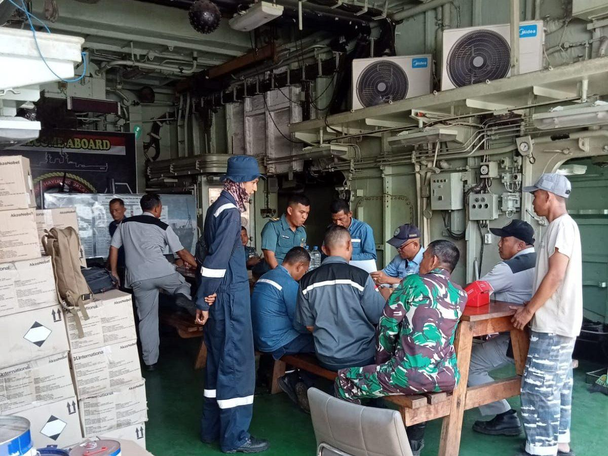

| Klien Akhir | TNI Angkatan Laut Republik Indonesia |
|---|---|
| Kontraktor / Vendor | PT Berkat Samudera Bersama (Jakarta) |
| Unit Kapal Perang | KRI Sultan Iskandar Muda 367 (Agustus 2024), KRI Kambani (November 2024), KRI TSR 542 × 2 unit (November 2024) |
| Tipe Sistem | Sea Water Reverse Osmosis (SWRO) Watermaker |
| Kapasitas Produk | 30 ton/hari per unit kapal (~1,25 m³/jam continuous) |
| Sumber Air | Air laut langsung intake dari sea chest kapal |
| Kualitas Output | TDS < 500 ppm, layak minum awak kapal sesuai Permenkes 492/2010 |
| Konfigurasi | Compact pre-treatment + SWRO + ERD + post-treatment, marine-grade SS-316L |
| Sertifikasi | Sesuai standar BKI dan persyaratan operasional TNI AL |
| Status | Seluruh 4 unit aktif beroperasi |
Latar Belakang Proyek
Sepanjang 2024, TSM dipercaya untuk memasok watermaker SWRO 30 ton per hari bagi total 4 unit Kapal Perang Republik Indonesia (KRI) melalui kontraktor PT Berkat Samudera Bersama. Empat unit kapal yang dilayani:
- KRI Sultan Iskandar Muda 367 — SWRO 30 TPD, Agustus 2024
- KRI Kambani — SWRO 30 TPD, November 2024
- KRI TSR 542 — SWRO 30 TPD × 2 unit (sistem ganda), November 2024
Kapasitas 30 TPD ditujukan untuk kelas kapal kombatan dan kapal pendukung dengan jumlah awak yang lebih besar dan misi operasional yang lebih intensif dibanding kapal patroli biasa. Untuk KRI TSR 542, dipasang sistem ganda untuk menjamin redundancy — saat satu unit dalam maintenance, unit kedua tetap dapat menyediakan air tawar bagi awak kapal.
Empat unit ini melengkapi portofolio TSM sebagai vendor watermaker terpercaya untuk armada TNI AL, melengkapi unit-unit lain yang sudah dipasang sebelumnya (lihat studi kasus KRI AMY Surabaya dan armada TNI AL lainnya).
Spesifikasi Teknis Sistem
Setiap unit watermaker SWRO 30 TPD dirancang dengan konfigurasi marine-grade yang sama:
Pre-treatment Compact
- Sea chest filter SS-316L dengan basket strainer
- Cartridge filter dual-stage 25 µm + 5 µm
- Antiscalant dosing proportional dengan flow rate
SWRO Skid
- High-pressure pump axial piston dengan flexible coupling
- Pressure vessel SS-316L dengan elemen membran 4040 marine-spec
- ERD turbocharger untuk recovery energi
- Recovery rate optimal pada operasi compact (35-40%)
Post-treatment
- Calcite remineralizer untuk netralisasi pH
- UV sterilizer 254 nm untuk disinfeksi
- Storage tank SS-316L dengan vent filter
Marine-Grade Construction
Seluruh komponen yang terpapar atmosfer kapal menggunakan SS-316L minimum, dengan vibration mounting di seluruh skid base, IP66+ junction box untuk semua koneksi listrik, dan marine epoxy 3-layer pada frame. Dokumentasi material certificate, weld qualification, dan hydrostatic test report disusun lengkap untuk kepatuhan BKI.
Kemitraan dengan PT Berkat Samudera Bersama
PT Berkat Samudera Bersama adalah kontraktor terpercaya yang melayani kebutuhan teknis TNI AL. Sepanjang 2024, kemitraan TSM-PT BSB menghasilkan delivery 4 unit watermaker SWRO 30 TPD dengan kualitas konsisten dan timeline pengerjaan yang dapat diprediksi.
Sebelumnya, di Maret 2022, TSM juga menyuplai SWRO 24 TPD × 2 unit untuk KRI Dewa Kembar melalui CV Sari Tama, di Dismatal Pondok Dayung Jakarta. Track record ini menjadi fondasi kepercayaan untuk proyek-proyek selanjutnya.
Signifikansi Strategis
Untuk armada TNI AL yang beroperasi di perairan Indonesia, keandalan watermaker tidak hanya soal kenyamanan awak kapal — ia adalah faktor kritis dalam kemampuan operasional kapal perang. KRI yang harus mengisi air dari pelabuhan setiap beberapa hari memiliki batasan jangkauan operasi yang signifikan. KRI dengan watermaker 30 TPD yang andal dapat beroperasi mandiri di laut selama berbulan-bulan tanpa kendala pasokan air.
Ke-4 unit ini melengkapi total lebih dari 12 unit KRI yang sudah TSM layani dengan watermaker SWRO — track record yang menempatkan TSM sebagai salah satu vendor watermaker andalan untuk armada TNI AL.
Pertanyaan yang Sering Diajukan
Mengapa kapasitas 30 TPD dipilih untuk kelas kapal ini?
Kapasitas 30 ton/hari ditujukan untuk kapal kombatan menengah-besar dengan jumlah awak 80-150+ orang dan misi operasional panjang. Konsumsi air per awak (minum, masak, mandi, cuci) plus kebutuhan operasional kapal membutuhkan margin di atas 200 liter per orang per hari. 30 TPD memberikan margin yang aman bahkan untuk kondisi peak demand.
Apa beda watermaker 30 TPD ini dengan 24 TPD untuk KRI lain?
Konfigurasi dasarnya sama (compact skid SWRO marine-grade), perbedaan utama di: ukuran pompa high-pressure (lebih besar untuk feed flow yang lebih tinggi), jumlah elemen membran (lebih banyak vessel paralel), dan kapasitas storage tank. Energy efficiency dan footprint scale secara proporsional dengan kapasitas.
Mengapa KRI TSR 542 dilengkapi 2 unit SWRO?
Redundancy adalah pertimbangan kritis untuk kapal perang dengan misi operasional panjang. Dua unit independen yang dapat beroperasi bergantian atau bersamaan menjamin: (1) tidak ada downtime watermaker saat maintenance terjadwal, (2) jika satu unit gagal di laut, unit kedua tetap menjamin pasokan air, (3) kapasitas total 60 TPD dapat dimanfaatkan untuk kondisi peak demand atau shower kolektif setelah misi.
Apakah TSM dapat memasok watermaker untuk KRI baru di masa depan?
Ya. TSM memiliki jalur pengadaan yang sudah teruji baik melalui kontraktor authorized seperti PT Berkat Samudera Bersama maupun langsung untuk proyek tertentu. Kapasitas mulai dari 2 TPD untuk kapal patroli kecil hingga 60+ TPD untuk kapal kombatan besar dapat dipasok dengan dokumentasi BKI lengkap. Lead time typical 4-8 bulan tergantung kompleksitas dan availability material marine-grade.
Apakah service contract tersedia untuk KRI yang sudah beroperasi?
Tersedia. TSM menyediakan service contract jangka panjang untuk semua KRI yang menggunakan watermaker TSM, mencakup: penggantian membran setiap 4-6 tahun, suplai cartridge filter dan kimia rutin, kalibrasi instrumentation, dan emergency support. Service dilakukan saat kapal docking di pangkalan untuk minimisasi disrupsi operasional.
Membutuhkan Watermaker untuk Vessel atau Kapal Perang?
Tim engineering TSM siap mendiskusikan kebutuhan water treatment Anda dengan referensi proyek serupa yang sudah terbukti. Konsultasi awal gratis tanpa komitmen.
📋 Konsultasi Proyek Anda →